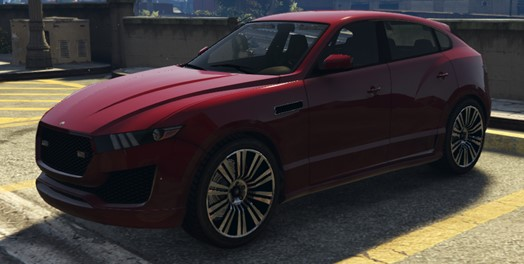
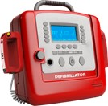
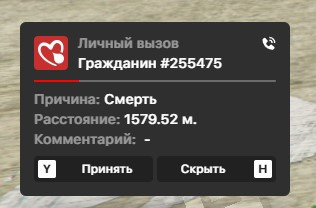
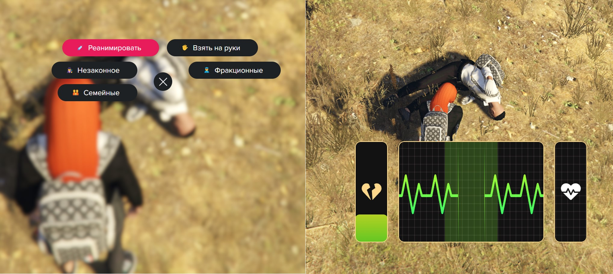
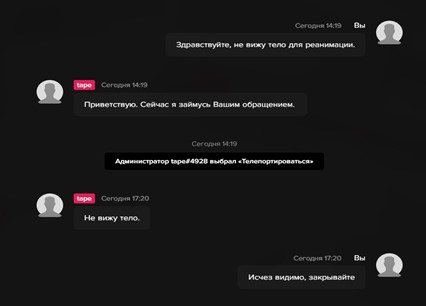

Памятка по оказанию ПМП
Первая медицинская помощь и патрулирование на АСМП
Первая медицинская помощь
Правила использования АСМП, дефибриллятор, эпинефрин, патрулирование и оказание ПМП на вызовах.
А.С.М.П. (Автомобиль Скорой Медицинской Помощи) — транспорт EMS, используемый для выездов на вызовы, оказания первой медицинской помощи (ПМП), а также помощи государственным организациям и гражданам.

- ✔АСМП разрешено брать с 3-го ранга (Paramedic).
- ✔Спец. сигналы (сирена, мигалки) задействуются только в экстренных ситуациях.
- ✔Нарушать ПДД можно только при включённых спец. сигналах.
- ✖Запрещено оставлять А.С.М.П. у главного входа в больницу дольше 5 минут (исключение — доставка пострадавшего).
- ✖Нельзя оставлять А.С.М.П. без присмотра более 10 минут (исключение — угроза жизни или экстренная ситуация).
- ✔В случае утери транспорта разрешается взять новый.
Перед выездом на первый вызов вам необходимо получить дефибриллятор. Дефибриллятор — это медицинское устройство для нормализации сердечного ритма путём подачи электрического разряда. Запросить можно у старшего состава в спец. связи в канале «Запрос на дефибриллятор».

Далее понадобится эпинефрин — без него дефибриллятор абсолютно бесполезен. Используется для привода игрока в сознание, вместе с дефибриллятором.
- 1Отправляемся на парковку и берём фракционную машину: Планшет → EMS → Доставка транспорта.
- 2Открываем планшет: EMS → Вызовы. Нажимаем ползунок в правом верхнем углу «В патруле». Далее будут приходить уведомления о вызовах.

По прибытии на вызов нажать на человека: G›Реанимировать — пройти мини-игру с пробелом (нужно попасть пульсом в зелёную зону).

- ✖оказывать ПМП в зоне перестрелок;
- ✖оказывать ПМП, если вам угрожают оружием;
- ✖оказывать ПМП в радиусе 1 км вокруг зоны ДРОПА;
- ✖поднимать гражданских до оказания ПМП гос. сотруднику. Сначала поднимаем сотрудника гос. службы — потом гражданского;
- ✖оказывать ПМП, если у вас нет дефибриллятора;
- ✖оказывать ПМП на закрытых территориях без сопровождения.
«Здравствуйте, приехал(а) на вызов, не вижу пострадавшего» — и администратор ответит вам, есть ли человек в том месте. Если человек есть — вам помогут и вы сможете оказать реанимацию.
